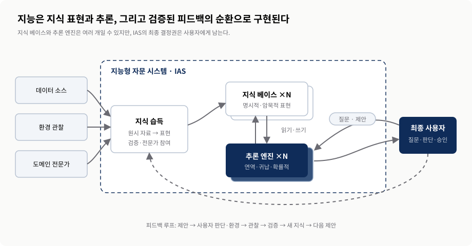
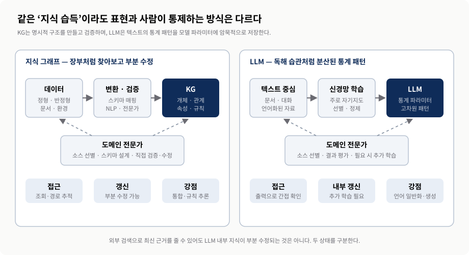
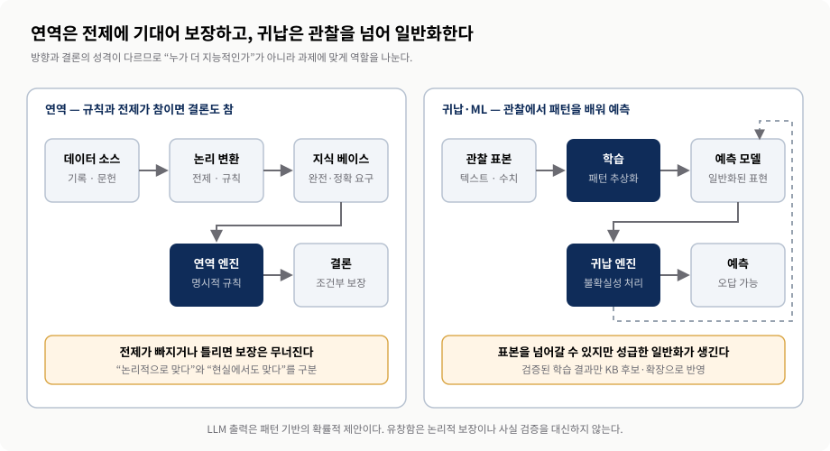
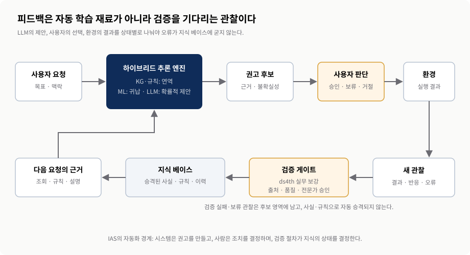
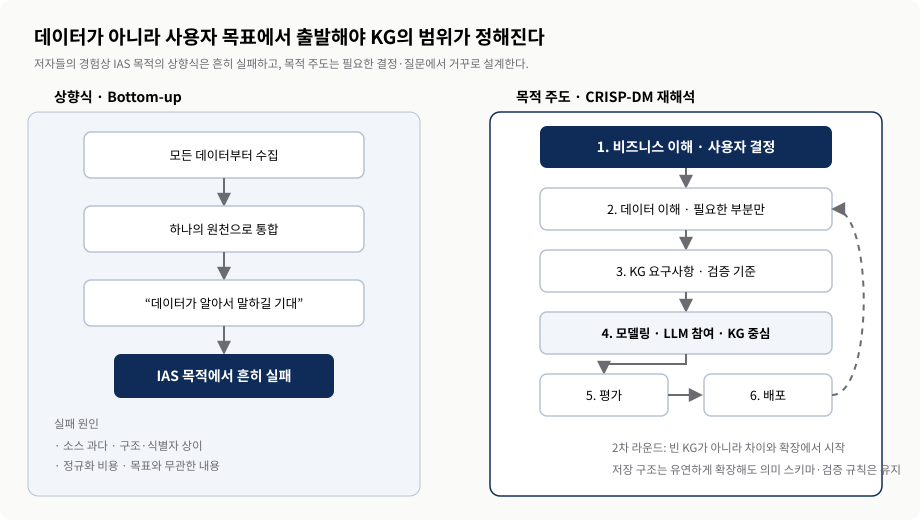

지능형 시스템: 하이브리드 접근
사람의 판단을 지키는 KG·LLM 지능형 자문 시스템
0. 핵심 요약
Chapter 2는 “KG와 LLM을 같이 쓰면 무엇이든 더 똑똑해진다”는 장이 아닙니다. 먼저 지능을 지식 표현과 추론으로 나누고, 시스템이 사용자를 대신할지 아니면 사용자를 도울지 결정합니다. 교재가 택한 범위는 지능형 자문 시스템(Intelligent Advisory System, IAS)입니다. IAS는 권고를 만들 수 있지만, 어떤 행동을 할지는 사람이 결정합니다.
- 표현 — 시스템은 무엇을 어떤 형태로 기억하며, 사람이 그 내용을 찾아보고 고칠 수 있는가?
- 추론 — 규칙으로 보장한 결론, 관찰에서 일반화한 예측, LLM이 만든 확률적 제안을 어떻게 구분할 것인가?
- 책임 — 누가 권고를 승인하고, 어떤 피드백만 검증된 지식으로 승격할 것인가?
| 단계 | 핵심 질문 | 교재의 주장 | 운영에서 남길 경계 |
|---|---|---|---|
| 지능 해부 | 지능은 무엇으로 이루어지는가? | 지식 표현과 추론이 핵심 구성 요소다. | 표현 방식이 가능한 추론과 설명 범위를 제한한다. |
| 시스템 범위 | 대신 행동할까, 조언할까? | 이 책은 사람을 돕는 IAS에 집중한다. | 최종 결정과 책임은 사용자에게 남긴다. |
| 지식 습득 | KG와 LLM은 무엇을 기억하는가? | KG는 명시적 구조, LLM은 암묵적 통계 패턴을 쓴다. | 둘을 같은 방식으로 조회·수정할 수 있다고 가정하지 않는다. |
| 추론 | 어떻게 결론을 만드는가? | 연역·귀납·확률적 접근은 서로 보완한다. | 보장된 결론·예측·제안의 상태를 구분한다. |
| 운영 | 어떻게 시간이 지나며 개선하는가? | 추론 엔진과 KB가 피드백 루프를 이룬다. | 관찰을 자동으로 사실로 저장하지 않는다. |
| 구축 | 어디서 시작하는가? | 모든 데이터가 아니라 비즈니스 목적에서 출발한다. | 필요한 결정·데이터·검증 기준을 먼저 좁힌다. |
1. 지능을 해부하면 표현·추론·사람의 역할이 보인다
- 지식 표현은 시스템이 세상을 적는 방식이고, 추론은 그 기록으로 결론을 만드는 과정이다.
- 자율 시스템은 실행까지 맡지만, IAS는 선택지를 제안하고 사람의 결정을 돕는다.
- 좋은 IAS는 목표·경험·지식 갱신·오케스트레이션을 함께 설계한다.
1.1 지식 표현은 ‘정리 규칙’, 추론은 ‘그 기록을 쓰는 판단’
지식 표현(knowledge representation)은 시스템이 도메인 정보를 구조화하고 부호화하는 언어입니다. 쉽게 말해 도서관이 책을 “주제–저자–발행연도–대출 상태”로 정리하는 분류·기록 규칙과 비슷합니다. 무엇을 어느 칸에 적느냐에 따라 나중에 찾을 수 있는 질문이 달라집니다. 환자의 증상과 약물 금기를 기록하지 않았다면, 아무리 좋은 추론 엔진도 “이 환자에게 피해야 할 약은 무엇인가?”에 안전하게 답할 수 없습니다.
추론(reasoning)은 그 기록과 규칙·증거를 이용해 결론이나 제안을 만드는 과정입니다. 요리사가 냉장고 목록을 보고 “우유가 없으니 우유가 필요한 메뉴는 제외하자”고 결정하는 장면을 떠올리면 됩니다. 냉장고 목록이 지식 표현이고, 목록과 조리 규칙을 적용하는 판단이 추론입니다. 둘은 따로 놀지 않습니다. 기록하지 않은 정보는 쓸 수 없고, 사용할 추론 방식이 달라지면 필요한 기록 구조도 달라집니다.
“지식을 많이 저장하면 지능적인가요?” 그렇지 않습니다. 전화번호부는 정보가 많아도 새 결론을 만들지 못합니다. 반대로 추론 엔진이 있어도 입력 지식이 빠지거나 틀리면 좋은 결론을 낼 수 없습니다. 지능형 시스템은 표현의 품질과 추론의 책임을 함께 설계해야 합니다.
1.2 자율과 자문을 가르는 기준은 ‘누가 행동을 확정하는가’
지능형 자율 시스템은 상황을 감지하고 결정을 내려 행동까지 수행합니다. 지능형 자문 시스템(IAS)은 정보·통찰·권고를 만들지만 행동을 확정하지 않습니다. 둘 다 자동화 기술을 쓸 수 있으므로 “자동화가 많으면 자율, 적으면 자문”이라고 나누면 헷갈립니다. 가장 분명한 질문은 “시스템 출력이 사람 승인 없이 현실의 행동으로 이어지는가?”입니다.
| 관점 | 지능형 자율 시스템 | 지능형 자문 시스템(IAS) |
|---|---|---|
| 출력 | 결정과 실행 | 통찰·선택지·권고 |
| 사람의 위치 | 목표·제약 설정과 감독 | 맥락 보완, 비교, 최종 판단 |
| 대표 질문 | “지금 어떤 행동을 수행할까?” | “사람이 무엇을 고려해 선택해야 할까?” |
| 주요 실패 비용 | 잘못된 행동이 즉시 현실에 반영 | 그럴듯한 권고가 사람 판단을 왜곡 |
| 핵심 통제 | 안전 제약·중단·복구 | 근거·불확실성·승인 기록 |
교재는 IAS의 예로 사기 의심 거래 표시, 가능한 진단·치료 선택지 제안 등을 듭니다. 특히 의료처럼 실패 비용이 큰 영역에서는 “사람이 마지막 버튼을 누른다”만으로 충분하지 않습니다. 사용자가 권고의 근거와 불확실성을 볼 수 있고, 반대 선택을 할 수 있으며, 그 결정 과정이 기록되어야 실질적인 인간 통제가 됩니다.
자문과 자율은 이름만으로 안전을 보장하는 이분법도 아닙니다. 사용자가 시간 압박 때문에 권고를 검토하지 못하고 그대로 수용한다면, 자문 시스템도 운영상 사실상 자동 결정처럼 작동할 수 있습니다. 또한 교재의 의료 진단 시나리오는 구조를 설명하기 위한 사고실험입니다. 실제 의료 적용에는 이 리포트의 범위를 넘어서는 임상 검증·규제·안전 요건이 별도로 필요합니다.
1.3 네 가지 특성이 하나의 아키텍처를 만든다
좋은 지능형 시스템은 네 축을 함께 갖춥니다. 의미 있는 목표는 사용자에게 실제로 중요한 결과를 정합니다. 지능적 경험은 맞는 제안의 가치를 키우고 틀린 제안의 비용을 낮추는 인터페이스입니다. 지식 생성·갱신은 데이터와 피드백을 관리합니다. 오케스트레이션은 여러 모델·도구·검증 단계를 연결하고 위험과 품질을 통제합니다. 한 축이라도 빠지면 “똑똑해 보이는 데모”는 될 수 있어도 운영 가능한 IAS가 되기 어렵습니다.
지식 베이스와 추론 엔진은 각각 하나일 필요도 없습니다. 여러 KB와 엔진이 순차 또는 병렬로 작동하고, 한 과정의 출력이 다음 과정의 입력이 될 수 있습니다. 그래서 하이브리드의 핵심은 부품 수가 아니라 각 출력의 상태와 다음 단계가 확인할 계약입니다.

교재 Chapter 2 그림 2.1·2.2·2.4·2.10의 관계를 발표자가 재구성. 사용자 승인과 검증된 피드백을 원자료의 암묵적 책임 경계보다 명시적으로 표시했다.2. KG와 LLM은 같은 ‘지식’을 같은 방식으로 기억하지 않는다
- KG는 개체·관계·속성과 스키마로 명시적 지식을 만들고, 사람이 경로를 조회하고 부분 수정할 수 있다.
- LLM은 텍스트의 통계 패턴을 파라미터 전체에 분산해 담으므로 내부 사실을 장부처럼 직접 찾기 어렵다.
- 두 표현의 접근·갱신·능력 차이가 하이브리드 역할 분담의 출발점이다.
2.1 지식 습득은 ‘수집’이 아니라 사용할 표현으로 바꾸는 일
지식 습득(knowledge acquisition)은 자료를 모으는 데서 끝나지 않습니다. 원시 자료를 시스템이 추론에 사용할 수 있는 표현으로 바꾸고, 그 결과를 지식 베이스에 저장하는 과정입니다. 영수증 봉투를 떠올려 보세요. 영수증을 한데 모으는 것은 수집이고, 날짜·상점·금액·항목으로 읽어 가계부에 적는 것이 습득입니다. 어느 칸이 비었고 누가 확인했는지도 함께 남겨야 나중에 믿고 계산할 수 있습니다.
KG에서는 서로 다른 소스의 개체와 관계를 맞추고, 스키마나 온톨로지에 따라 의미를 정리합니다. 도메인 전문가는 어떤 소스를 쓸지, 서로 다른 이름이 같은 대상을 가리키는지, 결과가 실제 도메인을 반영하는지 검토합니다. 준비 비용은 크지만, 결과를 조회하고 근거 경로를 따라가며 특정 사실만 고칠 수 있습니다.
교재 §2.3이 직접 비교하는 KG 입력은 원시·정형·반정형 데이터입니다. 비정형 문서는 뒤의 §2.5.2에서 NLP·LLM이 개체와 관계 후보로 구조화한 뒤 KG 검증 경로에 편입됩니다. 따라서 “KG가 비정형 문서를 저절로 이해한다”가 아니라, 해석 계층과 검증 계층의 협업으로 보아야 합니다. 또한 교재의 “대부분 비지도 학습”이라는 표현은 오늘날 LLM의 일반적인 학습 방식을 설명할 때 주로 쓰는 자기지도 학습과 함께 이해하면 됩니다.
LLM은 대규모 텍스트에서 언어 패턴을 학습해 모델 파라미터에 분산된 표현을 만듭니다. 이를 암묵적 지식이라고 부르는 이유는 “이 사실은 38번째 칸에 저장되어 있다”처럼 위치를 직접 가리킬 수 없기 때문입니다. 사람으로 비유하면, 문법책의 규칙표를 펼쳐 보는 것보다 오랜 독서로 몸에 밴 문장 감각에 가깝습니다. 자연스러운 문장을 만들고 맥락을 연결하는 데 강하지만, 특정 사실만 찾아 지우거나 근거 문장을 내부에서 꺼내는 일은 어렵습니다.
“LLM도 지식을 저장한다면 거대한 데이터베이스인가요?” 아닙니다. 데이터베이스처럼 키로 정확한 레코드를 꺼내는 구조가 아닙니다. 검색·RAG로 최신 문서를 입력에 붙일 수는 있지만, 그것은 외부 근거를 제공하는 것이지 모델 내부 파라미터의 해당 사실을 부분 수정한 것이 아닙니다.
| 관점 | KG | LLM | 하이브리드 설계 질문 |
|---|---|---|---|
| 주요 입력 | 원시·정형·반정형 데이터, 문서에서 추출한 후보 | 대규모 텍스트 중심 | 어떤 소스가 사실의 기준인가? |
| 표현 | 개체·관계·속성·규칙 | 분산된 통계 파라미터 | 명시적 사실과 모델 지식을 어떻게 구분할까? |
| 사람의 접근 | 노드·경로·출처를 직접 조회 | 프롬프트와 출력으로 간접 관찰 | 설명에 어떤 근거 경로를 붙일까? |
| 갱신 | 특정 노드·관계의 추가·수정·삭제 | 모델 내부는 추가 학습·미세조정 등이 필요 | 최신 정보는 외부 KB로 공급할까? |
| 강점 | 통합·제약·경로·규칙 추론 | 언어 이해·생성·모호한 맥락 처리 | 각 강점이 실제 병목과 연결되는가? |
| 대표 위험 | 스키마·식별자·유지 비용 | 근거 불투명·유창한 오류 | 누가 검증하고 되돌릴까? |

교재 Chapter 2 그림 2.5–2.7과 §2.3을 재구성. 교재의 ‘대부분 비지도’ 표현은 오늘날의 일반 용어인 자기지도 학습으로 풀어 쓰고, 외부 근거 갱신과 모델 내부 갱신을 구분했다.3. 연역은 보장하고, 귀납은 일반화하며, LLM은 후보를 제안한다
- 연역은 전제와 규칙이 참일 때 결론을 보장하지만, 현실의 지식 베이스는 불완전할 수 있다.
- 귀납은 관찰을 넘어 새 사례를 예측하지만 결론이 틀릴 가능성을 남긴다.
- 교재가 말하는 LLM의 ‘확률적 추론’은 형식 논리의 보장과 다르며, 운영에서는 권고 후보로 취급한다.
3.1 세 질문: 불확실성·도출·일반화
추론 엔진은 지식 베이스를 사용해 통찰과 제안을 만듭니다. 이때 세 질문이 생깁니다. 첫째, 입력이 틀리거나 모호할 때 불확실성을 어떻게 표시할까요? 둘째, 이미 아는 사실에서 빠진 정보를 어떻게 도출할까요? 셋째, 본 적 없는 사례에도 적용할 수 있도록 관찰을 어떻게 일반화할까요? 한 엔진이 이 셋을 모두 같은 확실성으로 해결한다고 가정하면 위험합니다.
연역(deduction)은 “모든 회원은 배지를 가진다”와 “민수는 회원이다”에서 “민수는 배지를 가진다”를 도출하는 방식입니다. 전제와 규칙이 참이면 결론도 참입니다. 그러나 회원 명단이 오래되었거나 규칙에 예외가 빠졌다면, 논리 계산 자체가 정확해도 현실에 대한 결론은 틀릴 수 있습니다. 그래서 논리적 타당성과 입력 사실의 정확성·완전성을 분리해 봐야 합니다.
귀납(induction)은 여러 관찰에서 패턴을 뽑아 새 사례를 예측합니다. 세 번 본 버스가 모두 늦었다고 해서 “이 노선은 언제나 늦다”고 결론 내리면 성급한 일반화일 수 있습니다. 그래도 정확히 같은 사례만 외우는 시스템과 달리, 충분히 대표적인 데이터에서 패턴을 배운 모델은 처음 보는 사례에도 예측을 할 수 있습니다.
| 방식 | 방향 | 결론의 성격 | 필요 조건 | 운영 상태 |
|---|---|---|---|---|
| 연역 | 일반 규칙 → 구체 결론 | 전제·규칙이 참이면 보장 | 정확하고 충분한 사실·규칙 | 조건부 논리 결론 |
| 귀납·ML | 관찰 표본 → 일반 패턴 | 새 사례를 예측하지만 오답 가능 | 대표성 있는 데이터·평가 | 예측·신뢰도 |
| 작동 특성 — 아래 행은 연역·귀납과 동급인 제3의 형식 추론 분류가 아님 | ||||
| LLM의 확률적 출력 (교재 표현: 확률적 추론) | 문맥·학습 패턴 → 다음 출력 | 맥락적인 후보·설명, 보장 없음 | 질문·근거·검증 절차 | 권고 후보 확신 표현·순위는 교정된 확률이 아님 |

교재 Chapter 2 그림 2.11·2.12와 §2.4–2.5를 재구성. 학습 결과나 예측을 검증 없이 KG 사실로 승격하지 않는 운영 경계를 추가했다.3.2 유창한 답은 형식적 추론의 증거가 아니다
교재는 잘 알려진 “농부·늑대·양·양배추” 문제에서 늑대와 양배추를 뺀 짧은 변형을 Claude 3.5 Sonnet에 묻고, 모델이 익숙한 원형 문제의 절차를 끌어와 불필요한 단계를 만든 사례를 소개합니다. 이 사례의 목적은 특정 제품의 현재 성능 순위를 매기는 것이 아닙니다. 익숙한 표면 패턴이 실제 조건 읽기를 압도할 수 있다는 실패 모드를 보여 주는 역사적 예시입니다. 모델과 서비스는 빠르게 바뀌므로 이 결과를 2026년 모델 전체의 벤치마크처럼 일반화하면 안 됩니다.
교재가 인용한 Wu 등의 연구도 한쪽 결론만 주지 않습니다. 모델은 반사실적 변형에서 어느 정도 추상적 과제 해결 능력을 보였지만, 기본 조건 대비 성능이 상당하고 일관되게 낮아졌고 좁고 전이되지 않는 절차에 의존하는 경향을 보였습니다. 이를 “LLM은 추론을 전혀 못 한다”로 줄여도, “유창하니 폭넓게 추론한다”로 키워도 원자료보다 강한 주장입니다.
교재는 LLM이 불완전한 정보에서 여러 가능성을 다루는 역할을 확률적 추론이라고 설명합니다. 다만 LLM의 다음 토큰 확률이 곧 진단 확률이나 논리적 참일 확률을 뜻하지는 않습니다. 운영에서는 “가능성을 정리한 권고 후보”로 다루고, 근거 조회·규칙 검사·전문가 판단을 거쳐야 합니다.
마지막으로 KG와 LLM을 합친다고 인간 수준의 상식 추론이 생기는 것도 아닙니다. 교재는 두 접근 모두 사람이 자연스럽게 하는 직관적 도약이나 암묵적 맥락 이해에 실패할 수 있다고 경고합니다. 하이브리드는 실패 모드를 줄이고 발견 가능하게 만들 수 있지만, 약점을 모두 상쇄해 만능 시스템을 보장하지 않습니다.
4. 하이브리드는 엔진의 수가 아니라 상태와 책임의 분리다
- KG·규칙은 명시적 사실과 조건을 제공하고, ML·LLM은 불완전한 입력에서 예측·후보를 만든다.
- IAS는 권고를 만들고 사람은 행동을 결정하며, 검증 게이트가 관찰의 지식 승격 여부를 결정한다.
- 피드백은 곧 진실이 아니다. 오류·편향·우연한 결과가 다시 학습되는 악순환을 막아야 한다.
4.1 완벽한 KB가 없기 때문에 역할을 조합한다
순수 연역 엔진은 필요한 지식과 규칙이 모두 정확하게 준비되어 있을 때 강합니다. 그러나 의료 권고를 예로 들면 증상 기록이 빠질 수 있고, 질병과 증상의 관계는 확률적이며, 환자 선호와 비용도 계속 바뀝니다. 현실에서 “완전하고 정확한 KB”는 매우 강한 전제입니다. 귀납·ML은 관찰에서 패턴을 배워 이 빈틈을 일반화하고, LLM은 비정형 문헌과 질문을 해석해 가능한 설명과 선택지를 정리할 수 있습니다.
그렇다고 LLM이 빠진 사실을 만들어 채우게 해서는 안 됩니다. KG와 규칙이 제공한 명시적 근거, ML이 계산한 예측, LLM이 구성한 설명은 서로 다른 상태입니다. 화면과 데이터 모델에서 이를 섞지 않고, 사용자가 무엇이 사실이고 무엇이 추정이며 무엇이 생성된 설명인지 볼 수 있어야 합니다.

교재 Chapter 2 그림 2.10과 §2.5의 피드백 루프를 발표자가 운영 관점으로 재구성. 사람의 최종 판단과 후보→검증→사실의 승격 경계를 명시했다.4.2 후보·결정·관찰·검증된 사실을 한 칸에 넣지 않는다
여기서 중요한 출처 경계가 있습니다. 교재 그림 2.10은 관찰을 추론 엔진이 처리해 새 지식으로 잇습니다. 그림 4와 표 5의 검증 게이트는 교재에 그려진 별도 단계가 아니라, 사용자 클릭·수용·결과를 정답 라벨처럼 오해하지 않기 위해 ds4th study가 덧붙인 실무 보강입니다.
| 주체·상태 | 맡길 일 | 맡기지 않을 일 | 필수 통제 |
|---|---|---|---|
| KG·규칙 | 검증된 사실·관계·제약·출처 보존 | 모호한 의도의 임의 해석 | 스키마·무결성·버전·이력 |
| ML·LLM | 패턴 예측, 질문 해석, 후보·설명 생성 | 출처 없는 사실 확정, 조치 자동 승인 | 근거 연결·불확실성·평가 |
| 사용자·전문가 | 맥락 보완, 최종 판단, 예외·위험 검토 | 모든 오류를 기억에 의존해 수동 교정 | 승인 UI·감사 로그·이의 제기 |
| 새 관찰 | 후보 영역에서 출처·품질·영향 평가 | 자동으로 KG 사실에 덮어쓰기 | 검증 게이트·격리·롤백 |
5. 모든 데이터를 모으지 말고 필요한 결정을 먼저 정한다
- 저자들의 경험상, IAS 구축 목적의 상향식은 소스·정규화 비용과 무관한 데이터에 매몰되어 흔히 실패한다.
- 목적 주도 접근은 CRISP-DM을 재해석해 사용자 목표와 비즈니스 이해에서 출발한다.
- 스키마리스는 저장 구조의 확장 유연성이지, 의미 스키마와 검증 규칙이 필요 없다는 뜻이 아니다.
5.1 ‘창고부터 채우기’와 ‘필요한 요리부터 정하기’
상향식(bottom-up) 접근은 “일단 모든 데이터를 한곳에 모으면 데이터가 답을 말해 줄 것”이라고 기대합니다. 이는 메뉴를 정하지 않은 채 식재료 창고부터 가득 채우는 것과 비슷합니다. 소스마다 이름·식별자·형식이 다르고, 통합 비용은 계속 늘며, 실제 사용자 질문과 무관한 데이터가 대부분일 수 있습니다. 교재 저자들의 경험상 이런 방식은 IAS 구축이라는 목적에서 KG 도입 실패로 이어지는 경우가 많습니다. 다만 폭넓은 데이터 통합·카탈로그 자체가 목적이라면 상향식이 언제나 나쁜 것은 아닙니다.
목적 주도(purpose-driven) 접근은 거꾸로 시작합니다. “누가 어떤 결정을 더 잘 내려야 하는가?”, “그 결정에 필요한 질문과 실패 비용은 무엇인가?”를 먼저 정합니다. 그다음 필요한 데이터만 찾고, KG의 내용·구조·검증 기준을 설계합니다. 교재는 이를 CRISP-DM의 비즈니스 이해 → 데이터 이해 → 모델링 → 평가 → 배포 순환으로 설명합니다.

교재 Chapter 2 그림 2.13·2.14와 §2.6을 재구성. 2차 라운드의 저장 구조 확장과 의미 스키마·검증 규칙 유지를 분리해 표시했다.5.2 LLM은 각 단계의 보조자이지 프로젝트 목표가 아니다
| 단계 | 핵심 산출물 | KG 역할 | LLM 역할 | 사람의 승인 |
|---|---|---|---|---|
| 비즈니스 이해 | 사용자 결정·성공·중단 기준 | 필요 관계 질문 | 요구사항 초안 보조 | 목표·위험 확정 |
| 데이터 이해·습득 | 쓸 소스와 품질 프로파일 | 식별자·스키마·출처 | 문서에서 개체·관계 후보 추출 | 소스·후보 검증 |
| 모델링 | 규칙·알고리즘·예측 모델 | 학습·추론의 구조적 근거 | 질문 해석·후보·설명 | 평가 설계·허용 오차 |
| 평가·배포 | 품질 보고서·운영 파이프라인 | 근거·이력·갱신 | 자연어 인터페이스 | 출시·중단·롤백 결정 |
“그래프 DB는 스키마리스라 설계 없이 바로 넣어도 되나요?” 여기서 스키마리스는 새 노드·관계·속성을 비교적 유연하게 더할 수 있다는 뜻입니다. 같은 사람이 두 ID로 들어오지 않게 하는 식별 규칙, 관계의 의미, 필수 속성, 검증 절차는 여전히 필요합니다. 저장 형식의 유연성과 의미 모델의 부재를 혼동하면 안 됩니다.
이 구분이 다음 회차로 이어집니다. 저장 계층이 유연한데도 Chapter 3에서 온톨로지를 설계하는 이유는, 애플리케이션과 사람이 공유할 의미 계약이 필요하기 때문입니다.
6. 기술 조합보다 문제·상태·책임을 먼저 검증한다
- 하이브리드는 KG와 LLM을 모두 넣는 체크리스트가 아니라 서로 다른 책임이 실제 병목을 줄이는지 보는 설계다.
- 대표 질문 하나에서 기준선·실패 비용·승격 규칙·사람 승인 시간을 함께 측정한다.
- 근거 없는 확신, 자동 사실 승격, 형식적 인간 승인이 발견되면 확장보다 중단·재설계를 택한다.
6.1 도입 판단표
| 질문 | 적합 신호 | 비적합·중단 신호 | 작게 검증할 것 |
|---|---|---|---|
| 사용자 결정이 분명한가? | 반복되는 고비용 판단이 있음 | “AI를 써 보자” 외 목표가 없음 | 대표 사용자·질문·행동 |
| 명시적 관계가 필요한가? | 출처·규칙·다단계 관계가 핵심 | 단순 키워드 검색으로 충분 | 근거 경로와 규칙 적중률 |
| 언어·모호성 처리가 필요한가? | 문서·자유 질문·요약이 병목 | 입력이 이미 정형화됨 | 후보 누락·오탐·설명 충실도 |
| 상태를 구분할 수 있는가? | 사실·예측·후보·결정·관찰을 분리 | 생성 결과를 곧바로 사실로 저장 | 승격·보류·거절 로그 |
| 사람이 실질적으로 통제하는가? | 근거 확인·반대 선택·이의 제기 가능 | 승인이 형식적 클릭에 그침 | 검토 시간·번복률·고위험 오류 |
| 운영 가능한가? | 소유자·감시·롤백·갱신 주기 명확 | 실패 시 책임자와 복구 경로가 없음 | 오류 재현·경보·롤백 연습 |
6.2 첫 실험은 ‘답변 데모’가 아니라 ‘책임 루프’여야 한다
이 절의 판단 기준은 교재가 직접 제시한 수치가 아니라, Chapter 2의 책임 구조를 운영 가능한 실험으로 번역한 발표자 종합입니다. 따라서 조직의 위험 수준과 사용자 역할에 맞게 임계값을 별도로 합의해야 합니다.
대표 사용자 질문 20–50개처럼 좁은 범위를 고르고 기존 방식의 기준선을 먼저 남깁니다. KG가 근거 경로와 규칙 위반을 얼마나 잘 보여 주는지, LLM이 질문 해석과 후보 생성에서 어떤 누락·오탐을 만드는지, 사용자가 권고를 검토하는 데 얼마나 걸리는지 측정합니다. 정확도 하나만 보지 말고 근거 충실도, 고위험 오류, 보류·거절 이유, 사실 승격 오류, 롤백 가능성을 함께 봅니다.
7. 정리와 토론 질문
- 지능형 시스템은 지식 표현과 추론을 결합하고, IAS는 최종 행동 결정을 사람에게 남긴다.
- KG의 명시적 지식과 LLM의 암묵적 패턴은 서로 다른 강점·갱신 방식·실패 모드를 갖는다.
- 목적 주도 하이브리드는 후보·검증·사실을 분리하고, 검증된 피드백만 다음 순환에 넣는다.
7.1 이해 확인
- 지식 표현과 추론을 냉장고 목록과 요리사의 판단에 비유했을 때, 우리 시스템에서 각각에 해당하는 것은 무엇인가요?
- 연역 결론이 논리적으로 맞아도 현실에서 틀릴 수 있는 이유는 무엇인가요?
- LLM의 권고 후보, 사용자의 결정, 환경의 관찰, KG의 검증된 사실을 한 테이블에 저장한다면 어떤 사고가 생길까요?
7.2 스터디 토론
- 우리 업무에서 시스템이 “자문”을 넘어 사실상 결정을 강요하는 지점은 어디인가요?
- 현재 가진 데이터 중 목적 주도 첫 실험에 꼭 필요한 20%와 과감히 제외할 80%는 무엇인가요?
- 사용자 피드백을 지식으로 승격하기 전에 확인해야 할 최소 증거는 무엇인가요?
핵심 용어
| 용어 | 이 리포트에서의 의미 |
|---|---|
| 지식 표현 | 도메인 정보를 시스템이 저장·전달·추론할 수 있도록 구조화하고 부호화하는 방식. |
| 추론 | 사실·규칙·관찰·패턴을 사용해 결론이나 제안을 만드는 과정. |
| 지능형 자문 시스템(IAS) | 정보와 권고를 제공하되 최종 행동은 사용자가 결정하는 시스템. |
| 지식 습득 | 원시 자료를 시스템이 사용할 표현으로 변환하고 검증해 지식 베이스에 넣는 과정. |
| 명시적 지식 | KG의 노드·관계·속성처럼 사람이 직접 조회하고 부분 수정할 수 있는 표현. |
| 암묵적 지식 | LLM 파라미터 전체에 분산된 통계 패턴처럼 특정 사실의 위치를 직접 가리키기 어려운 표현. |
| 연역 | 일반 전제와 규칙에서 구체 결론을 도출하며, 전제·규칙이 참이면 결론을 보장하는 추론. |
| 귀납 | 구체 관찰에서 일반 패턴을 배우며, 새 사례를 예측하지만 오답 가능성을 남기는 추론. |
| 확률적 제안 | LLM이 문맥과 학습 패턴을 바탕으로 만든 후보·설명. 형식 논리나 사실 검증의 보장은 아님. |
| 검증 게이트 | 관찰·후보가 출처·품질·규칙·전문가 승인을 통과해야 검증된 지식으로 승격되는 경계. |
| CRISP-DM | 비즈니스 이해에서 출발해 데이터 이해·모델링·평가·배포를 순환하는 ML·데이터 마이닝 방법론. |
| 스키마리스 | 저장 구조를 비교적 유연하게 확장할 수 있다는 뜻. 의미 스키마와 검증 규칙이 없다는 뜻은 아님. |
참고 자료와 도형 출처
- 교재Alessandro Negro. Knowledge Graphs and LLMs in Action, Chapter 2 “Intelligent systems: A hybrid approach.” Manning Publications. 본 리포트의 1차 자료이며, 원문 그림을 복제하지 않고 관계를 새로 구성했다.
- [1]Geoff Hulten, 지능형 시스템 정의의 출처. 제공된 해설판에는 상세 서지가 없으므로 전체 정보는 원서 Chapter 2 참고문헌을 따른다.
- [3]Alessandro Negro, Graph-Powered Machine Learning. 교재의 일반화·스팸 필터 설명 출처.
- [4]Wu 등, 반사실적 과제에서 LLM 성능을 분석한 연구. 정확한 서지 정보는 원서 Chapter 2 참고문헌을 따른다. 본 리포트는 특정 최신 모델의 성능 주장으로 확장하지 않는다.
- [12]CRISP-DM 방법론. 교재가 목적 주도 KG 개발 절차를 재구성하는 토대.